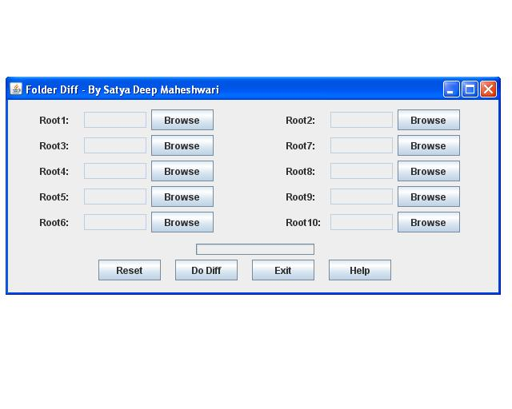
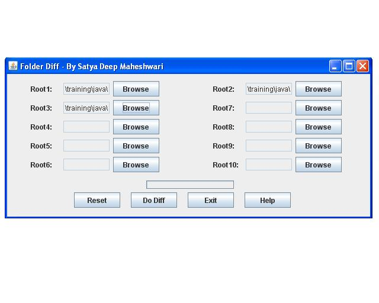

n-Way Folder Diff is a simple, platform independent tool to take a diff of multiple folders. It differs from usual diff tools because it is possible to do n-way (upto 10 way) diff as compared to the usual 2-way diff. As a result, it is possible to see the difference between multiple folders at one time. For e.g. finding out the difference of files added, changed or deleted in between multiple version of a code, with each builder residing in a separate folder.
Execute run.bat(Windows)/run.sh(*nix). It must be in the bin folder. On executing it, the application should open up.
Select folders to compare. In the example below, I choose 3 folders to compare.
Click on 'Do Diff' to compare. The diff report would come up in the browser in sometime depending on the folder sizes. Here are some examples.
| C:\training\java\a\File1.java |
| C:\training\java\b\File1.java |
| C:\training\java\c\File1.java |
Here 'File1' in folder 'C:\training\java\a' and folder 'C:\training\java\b' are in same color, that means they are same while 'File1' in folder 'C:\training\java\c' is different and hence shown in a different color.
| C:\training\java\a\File1.java |
| C:\training\java\b\File1.java |
| C:\training\java\c\File1.java |
Here 'File1' in folder 'C:\training\java\a' and folder 'C:\training\java\b' and 'C:\training\java\c' are in all in different colors, that means they are all different.
| C:\training\java\a\File1.java |
| C:\training\java\b\File1.java |
| C:\training\java\c\File1.java |
Here 'File1' in folder 'C:\training\java\a' and folder 'C:\training\java\b' and 'C:\training\java\c' are in same color, that means they are same.
| C:\training\java\a\File1.java |
| C:\training\java\c\File1.java |
Here 'File1' in folder 'C:\training\java\a' and folder 'C:\training\java\c' are in different color, that means they are different. There is no entry for 'C:\training\java\b', which means that it is not present in this folder.
| C:\training\java\a\File1.java |
| C:\training\java\c\File1.java |
Here 'File1' in folder 'C:\training\java\a' and folder 'C:\training\java\b' are in same color, that means they are same. There is no entry for 'C:\training\java\b', which means that it is not present in this folder.
| C:\training\java\a\File1.java |
Here 'File1' is present only in folder 'C:\training\java\a' and is not present in the other folders.
For any support, queries or bugs, mail me at m.satyadeep@gmail.com. Please prefix the mail subject with n-wayfolderdiff.